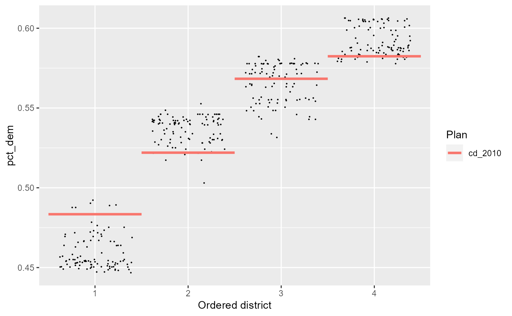
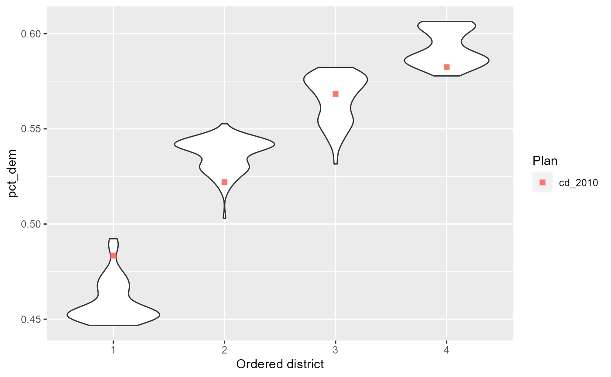
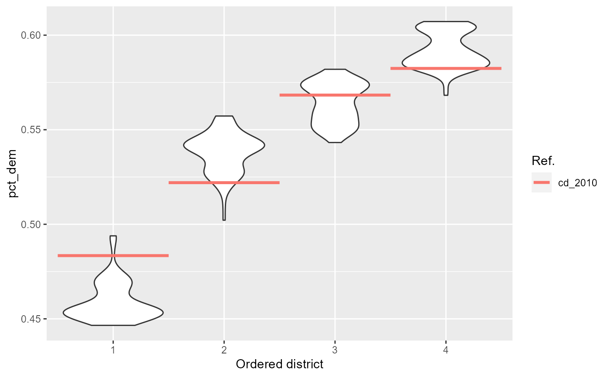

Plots a boxplot of a quantity of interest across districts, with districts optionally sorted by this quantity. Adds reference points for each reference plan, if applicable.
redist.plot.distr_qtys(
plans,
qty,
sort = "asc",
geom = "jitter",
color_thresh = NULL,
size = 0.1,
ref_geom,
ref_label,
...
)the redist_plans object.
<data-masking> the
quantity of interest.
set to "asc" to sort districts in ascending order of
qty (the default), "desc" for descending order, or
FALSE or "none" for no sorting.
the ggplot2 geom to use in plotting the simulated districts: either
"jitter" or "boxplot". Can also take in a function, so long as the
function accepts ....
if a number, the threshold to use in coloring the points. Plans with quantities of interest above the threshold will be colored differently than plans below the threshold.
The dot size for geom="jitter".
The reference plan geometry type. "line" or "point"
can be passed for reasonable defaults. Can also take in a function, so long as the
function accepts ....
A human-readable name for the reference plan. By default
the name in the plan column is used. This can also take in a function which returns
a call to ggplot2::labs().
passed on to geom_boxplot
A ggplot
ggdistFor custom functions in geom, we can also create more complicated things like rainclouds
using the ggdist package. For example:
raincloud <- function(...) {
list(
ggdist::stat_slab(aes(thickness = ggplot2::after_stat(pdf*n)), scale = 0.7),
ggdist::stat_dotsinterval(side = "bottom", scale = 0.7,
slab_size = NA, quantiles = 200)
)
}These functions can be then passed to geom.
library(dplyr)
data(iowa)
iowa <- redist_map(iowa, existing_plan = cd_2010, pop_tol = 0.05, total_pop = pop)
plans <- redist_smc(iowa, nsims = 100, silent = TRUE)
plans <- plans %>% mutate(pct_dem = group_frac(iowa, dem_08, tot_08))
redist.plot.distr_qtys(plans, pct_dem)

# It also takes custom functions:
redist.plot.distr_qtys(plans, pct_dem, geom = ggplot2::geom_violin)

# With the raincloud example, if you have `ggdist`, you can run:
# redist.plot.distr_qtys(plans, pct_dem, geom = raincloud)
# The reference geom can also be changed via `reg_geom`
r_geom <- function(...) ggplot2::geom_segment(ggplot2::aes(as.integer(.data$.distr_no) - 0.5,
xend = as.integer(.data$.distr_no) + 0.5,
yend = pct_dem,
color = .data$draw),
linewidth = 1.2, ...)
# Finally, the `ref_label` argument can also be swapped for a function, like so:
redist.plot.distr_qtys(plans, pct_dem, geom = ggplot2::geom_violin, ref_geom = r_geom,
ref_label = function() ggplot2::labs(color = 'Ref.'))
